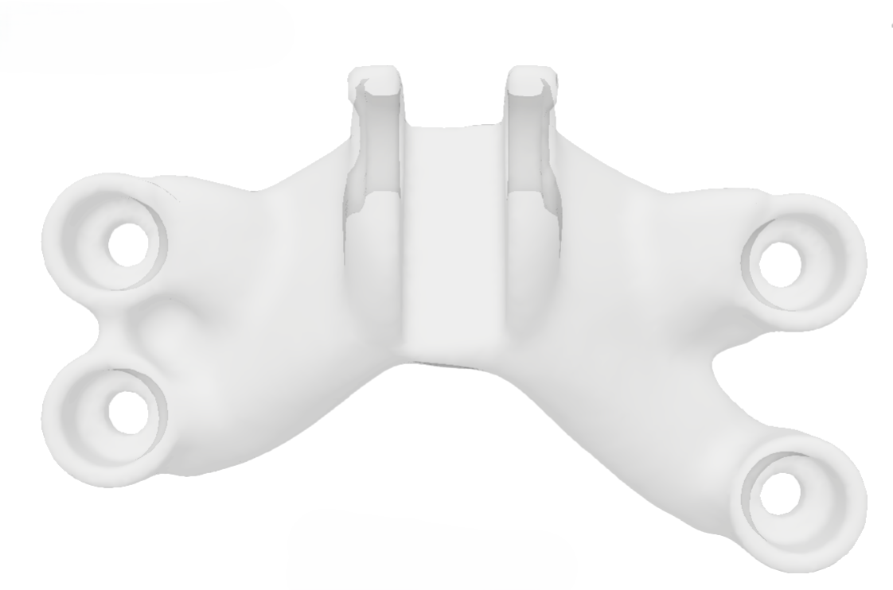

Design for Manufacturing (DFM)
Engineering solutions for machined, sheet metal and welded mechanical components.
- Concept Design
- Design Refinement
- Design Review

Engineering for Machined Components
The same function can be achieved through machining, sheet metal, welded assemblies or different material selections.
The challenge is not creating geometry. It is choosing the right solution before manufacturing.


Fig. 1 - Machining accessibility analysis based on single fixturing setup
We reduce uncertainty before manufacturing.

Fig. 4 - Concept development supported by engineering analysis
Arroyo Systems helps develop mechanical components under load with less technical uncertainty before manufacturing.


Fig. 5 - Design evolution driven by engineering analysis
Contact
Designed to Manufacture. Validated to Perform.